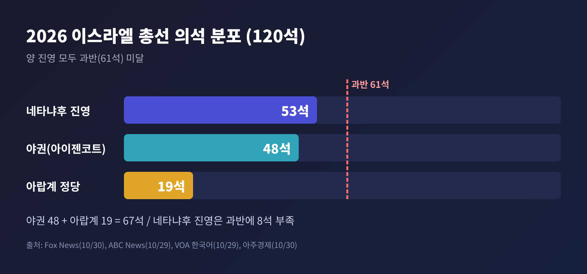
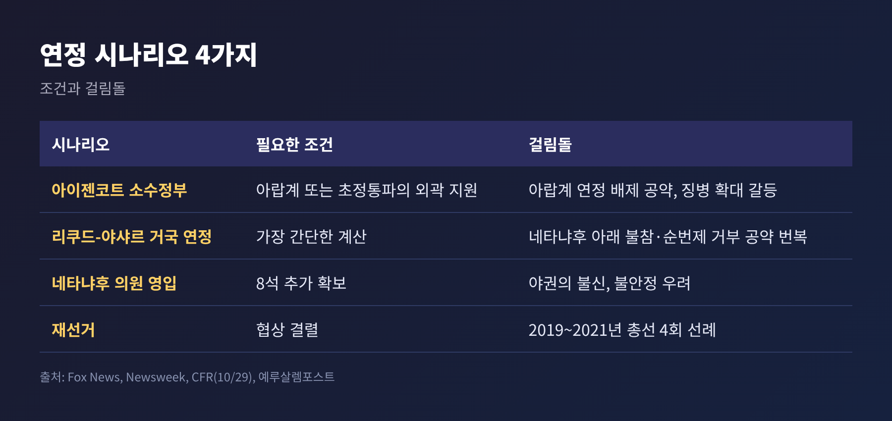
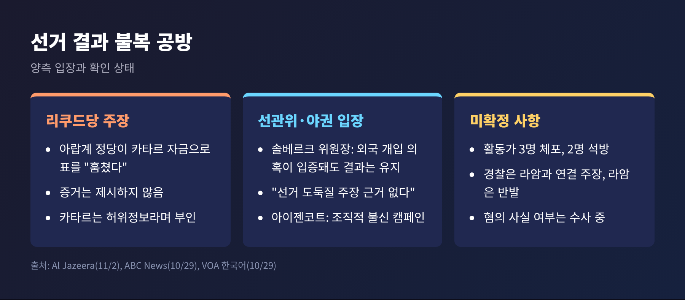
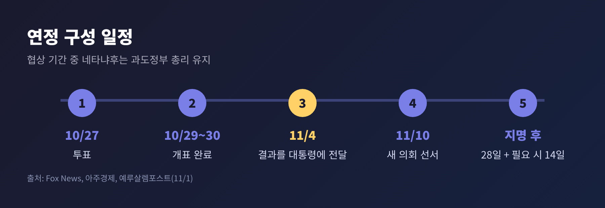
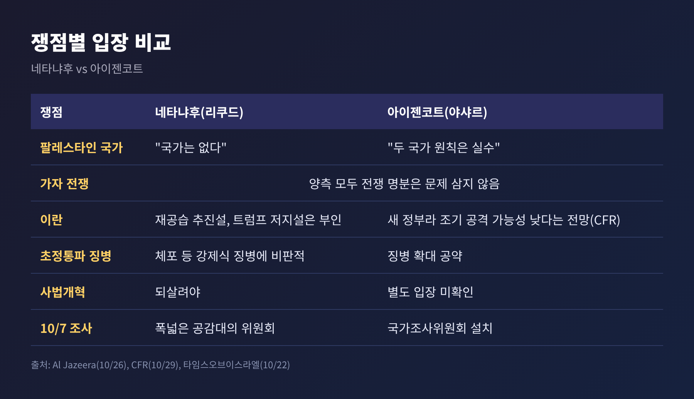

오늘은 10월 27일 치러진 이스라엘 총선 이후의 상황을 정리해 보려 합니다.
어느 진영도 과반을 얻지 못했고, 아랍계 정당 19석이 연정의 향방을 쥐게 됐습니다.
결과를 둘러싼 불복 공방과 앞으로의 일정, 이란·가자 정책 전망까지 확인된 사실 위주로 짚겠습니다.
2026년 10월 27일(화) 치러진 총선의 개표가 10월 29~30일 사이 마무리됐습니다.
의석은 모두 120석, 정부를 세우려면 61석이 필요합니다.
개별 정당으로는 리쿠드당이 27석으로 제1당을 지켰고, 아이젠코트의 야샤르가 21석으로 2위에 올랐습니다(Fox News, VOA 한국어 보도).
투표율은 Fox News 기준 77.9%였습니다. VOA 한국어는 최근 27년 사이 가장 높은 수준이라고 전했습니다.

한 가지 짚어둘 점이 있습니다.
아랍계 정당 안의 세부 의석은 매체마다 다릅니다. 합동명단이 11~12석, 라암이 7~8석으로 엇갈립니다.
19석이라는 합계만 일치하므로, 이 글에서는 합계만 쓰겠습니다.
네타냐후 진영은 과반에 8석이 모자랍니다.
아랍계 정당과 손잡을 수는 없는 구조입니다. 네타냐후는 아랍계가 포함된 정부는 "이스라엘을 위태롭게 한다"고 말했고, 그렇게 하면 정착민 정당을 잃을 수 있다는 분석이 ABC 보도에 담겼습니다.
반대편의 셈법도 간단하지 않습니다.
야권 48석에 아랍계 19석을 더하면 67석으로 과반입니다. 그러나 아이젠코트는 그동안 아랍계 정당과의 연정을 배제해 왔습니다. 야권 안의 일부 우파 정당도 이에 반대합니다.
그래서 눈길이 가는 쪽이 초정통파(하레디) 정당입니다.
유대교토라연합(UTJ) 7석이 여권을 이탈하면 여권은 46석으로 줄어 야권보다 적어집니다(아주경제 계산).
Fox News는 이스라엘 채널12를 인용해, UTJ 일부가 아이젠코트 소수정부를 외곽에서 지원하는 방안을 검토한다고 전했습니다. 한 인사는 "우리 표는 네타냐후의 주머니에 있지 않다"고 말했다고 합니다.
다만 UTJ 대표실은 협상 지시가 있었다는 보도를 부인했습니다.
연정 협상의 가장 큰 걸림돌은 초정통파 신학생의 병역 면제 문제입니다.
아이젠코트는 이번 선거를 "네타냐후의 징병 기피 정부냐, 징병을 시행하는 정부냐"의 선택으로 규정했습니다(Al Jazeera 10월 26일). 샤스의 데리 대표는 신학생 지위가 정리되지 않으면 정부에 참여하지도, 지지하지도 않겠다고 밝혔습니다.
초정통파가 바라는 면제와 아이젠코트의 징병 확대는 정면으로 부딪칩니다. 채널12는 타협 의사가 있다고 전했지만, 어디까지가 타협선인지는 확인되지 않았습니다.
여기에 신뢰 문제가 겹칩니다.
미국 외교협회(CFR)의 엘리엇 에이브럼스는 야권이 네타냐후의 약속을 믿지 않는다는 점을 들어 합의 가능성에 회의적입니다. 그는 네타냐후가 재선거를 오히려 매력적으로 볼 수 있다고 추정했습니다. 어디까지나 한 전문가의 해석입니다.

시나리오별로 보면 이렇습니다.
아이젠코트 소수정부는 아랍계나 초정통파의 외곽 지원이 필요합니다. 리쿠드와 야샤르가 손잡는 거국 연정은 계산이 가장 간단하지만, 아이젠코트가 네타냐후 아래에는 들어가지 않겠다던 공약을 뒤집어야 합니다. 그는 순번제 총리직도 거부해 왔습니다.
그리고 합의가 끝내 안 되면 재선거입니다. 뉴스위크가 인용한 분석가들은 이를 가장 가능성 높은 결과로 봤습니다.
이스라엘은 2019~2021년 3년 동안 총선을 네 번 치른 경험이 있습니다. 헤르초그 대통령이 이를 피하려 애쓰는 이유입니다.
결과가 나온 뒤 논란은 개표 밖으로 번졌습니다.
Al Jazeera 보도에 따르면 리쿠드당은 증거를 내놓지 않은 채, 아랍계 정당이 카타르 자금을 받아 표를 "훔쳤다"고 주장했습니다. 카타르는 허위정보 캠페인이라며 부인했습니다.
선거 직전에는 유권자 매수용 현금 봉투를 지닌 혐의로 활동가 3명이 체포됐습니다. 경찰은 이들이 라암과 연결돼 있다고 밝혔고, 2명은 석방됐습니다. 라암의 만수르 아바스 대표는 "선거 결과에 영향을 주려는 시도"라고 반발했습니다. 혐의의 사실 여부는 아직 확정되지 않았습니다.
반론은 비교적 선명합니다.
중앙선거관리위원회의 노암 솔베르크 위원장은 11월 1일 영상 성명에서, 외국 개입 의혹이 입증된다 해도 결과는 유지된다고 말했습니다. 선관위 직무대행 총국장은 "선거 도둑질 주장의 근거가 없다"고 밝혔고, 아이젠코트는 네타냐후가 결과를 깎아내리려는 "조직적 캠페인"을 벌인다고 비판했습니다.
VOA 한국어는 선거 과정에서 중대한 부정행위가 확인된 보고는 없었다고 전했습니다.

양측 주장을 가를 근거는 지금까지 공개된 자료로는 확인되지 않습니다.
다만 선거 관리 당국이 결과를 유지하겠다고 밝힌 만큼, 절차는 그대로 진행될 가능성이 높습니다.
정해진 절차는 다음과 같습니다.
협상이 이어지는 동안 네타냐후는 과도정부 총리직을 유지합니다.
헤르초그는 11월 1일 행사에서 의원들에게 "열린 마음으로" 협의에 임하라고 당부했습니다. 결과는 "현실"이라며 버티기를 경계하기도 했습니다.
예루살렘포스트에 따르면 합동명단과 라암은 협의에서 아이젠코트를 총리 후보로 추천할 전망입니다. 이스라엘민주주의연구소(IDI)의 한 연구원은 헤르초그가 아이젠코트에게 먼저 기회를 줄 가능성이 높다고 내다봤습니다.

외교·안보 정책은 누가 총리가 되든 크게 흔들리지 않을 것이라는 시각이 많습니다.
CFR의 에이브럼스는 이란, 가자, 레바논, 시리아 문제에서 이스라엘 안에 폭넓은 컨센서스가 있다고 썼습니다. Al Jazeera도 주요 후보 누구도 가자 전쟁의 명분 자체를 문제 삼지 않았다고 전했습니다.
이란 문제는 시계가 더 급합니다.
타임스오브이스라엘이 인용한 뉴욕타임스 보도에 따르면, 미국과 이스라엘은 11월 3일 미국 중간선거 이후의 재공습 계획을 마련한 것으로 전해집니다. 네타냐후는 트럼프가 자신을 막고 있다는 보도를 "사실이 아니다"라며 부인했습니다. 이 계획은 공식 확인된 것이 아니라 보도 내용입니다.
에이브럼스는 아이젠코트 정부라면 새 정부라는 이유로 조기 이란 공격에 나설 가능성이 낮다고 내다봤습니다. 이 역시 전망일 뿐 확정된 정책은 아닙니다.
팔레스타인 문제에서도 두 진영의 거리는 크지 않습니다.
네타냐후는 "팔레스타인 국가는 없다"고 했고, 아이젠코트도 "두 국가 원칙은 실수"라고 말했습니다. 오슬로 합의 폐기를 주장하는 스모트리치 대표과 "민간 분리와 안보 책임"을 내세운 야이르 골란 대표처럼 세부 입장은 갈립니다.
차이가 큰 쪽은 오히려 사법개혁과 10월 7일 사태 조사입니다. 네타냐후는 사법개혁을 되살리겠다고 했고, 나프탈리 베넷은 취임 즉시 관련 법을 폐기하겠다고 공약했습니다. 아이젠코트는 국가조사위원회 설치를 약속했습니다.

정리하면 이렇습니다.
확인된 것은 양 진영 모두 과반이 아니라는 점, 아랍계 정당과 초정통파가 사실상 변수라는 점, 그리고 11월 4일부터 공식 절차가 시작된다는 점입니다.
아직 모르는 것도 많습니다.
UTJ가 실제로 움직일지, 아이젠코트가 아랍계의 외곽 지원을 받아들일지, 네타냐후가 야권 의원을 끌어올 수 있을지는 확인되지 않았습니다. 부정선거 주장의 근거 역시 공개된 것이 없습니다.
마지막으로 한 가지만 덧붙이겠습니다.
이번 총선은 승자를 가리지 못했고, 대신 "누가 누구와 앉을 수 있는가"라는 질문을 남겼습니다.
몇 주 뒤 이스라엘이 새 정부를 세울지, 다시 투표소로 향할지는 협상 테이블이 정할 것입니다.
※ 이 글은 2026년 11월 2일 오후 8시(KST)까지 확인된 보도를 바탕으로 작성했으며, 협상 상황은 빠르게 바뀔 수 있습니다.